← 返回阅读库 · 原论文目录
论文讲解阅读文档 · 论文精读 · v232
交大出品“数字打工人”终结996！PC Agent
视频时长 00:22:33；讲解文字 7,251 字符；提取讲解画面 128 张。按视频原顺序阅读，每段文字保留时间戳。
文字来自整段视频的自动语音转写，按自然停顿分段，并与 PPT / 论文页面 / 演示画面对齐。未将讲解压缩为摘要；术语、数字和口述公式请结合画面及原论文核对。 阅读稿已校正规范部分明确术语误识别；原始逐字稿和每处修改记录另行保留。
讲解画面为源视频截图（640×360），不是可编辑 PPT 文件。全片按每秒 2 帧扫描内容变化，逐步展开页保留；连续动画保留代表画面。清晰度受源视频限制。
下载完整资料包 · 含离线 HTML、PDF、Word、全部 PPT 画面和字幕。
原论文与材料
PC Agent: While You Sleep, AI Works -- A Cognitive Journey into Digital World · 下载完整 PDF（24 页）
按时间阅读
00:00:00–00:00:04 · 画面 001
 00:00:00–00:00:04 · 画面 001
00:00:00–00:00:04 · 画面 001当 RPA 还在机械的复制表格操作当 GPT-4V 连改个 PPT 的格式都会崩溃你真的会相信现在的 AI 能替代人类通宵打工吗然而上海交大最新杀出的 PCA 人却让 AI 第一次偷私人了这个能完整复刻人类数字工作流的智能体正在重新定义 RPA 3.0 时代
00:00:04–00:00:08 · 画面 002
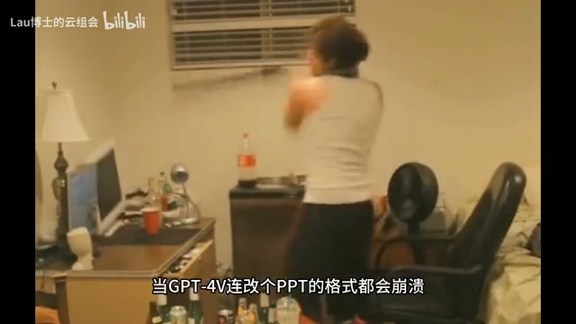
00:00:04–00:00:08 · 画面 00200:00:08–00:00:12 · 画面 003
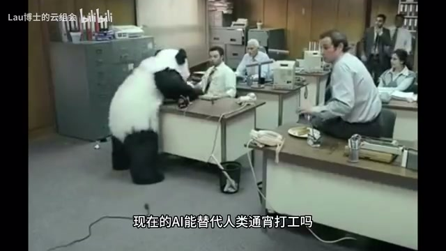
00:00:08–00:00:12 · 画面 00300:00:12–00:00:15 · 画面 004
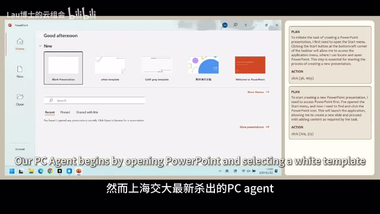
00:00:12–00:00:15 · 画面 00400:00:15–00:00:16 · 画面 005
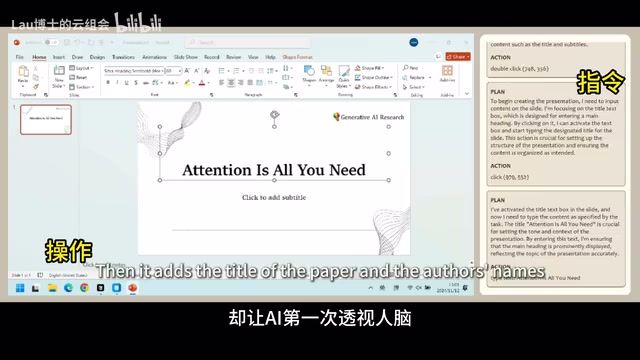
00:00:15–00:00:16 · 画面 00500:00:16–00:00:17 · 画面 006
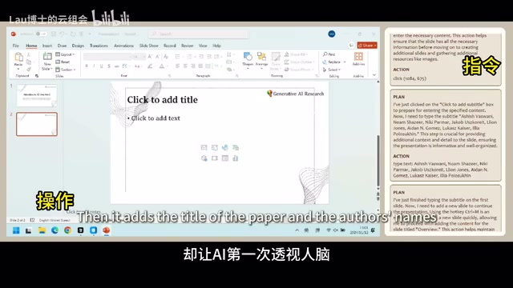
00:00:16–00:00:17 · 画面 00600:00:17–00:00:21 · 画面 007
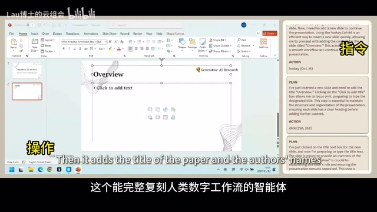
00:00:17–00:00:21 · 画面 00700:00:21–00:00:22 · 画面 008
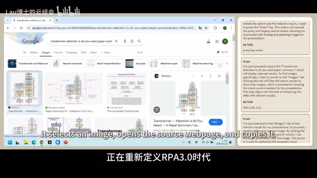
00:00:21–00:00:22 · 画面 00800:00:22–00:00:26 · 画面 009
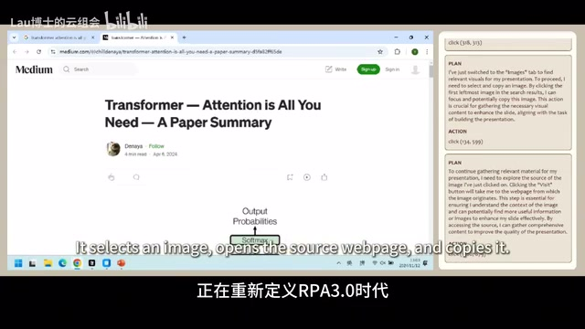
00:00:22–00:00:26 · 画面 009仅用 133 段人类操作记录就炼成了跨软件多步决策的能力，从鼠标轨迹到潜意识的停顿，这套认知补全框架正在让 AI 真正的理解什么叫做数字白领的工作思维。本期硬核拆解这个开源就引爆 GitHub 的认知转移框架，看中国团队是如何利用三个创新模块把 agent 能力焊进操作系统的底层。
00:00:26–00:00:30 · 画面 010
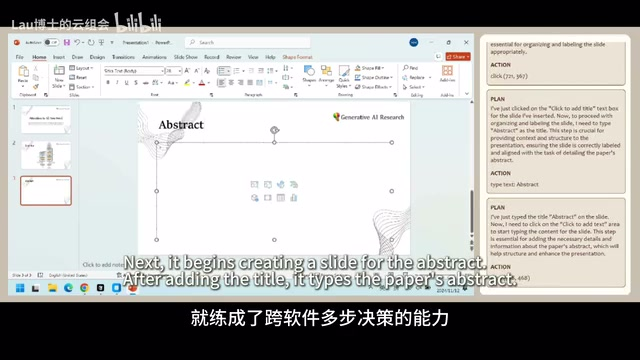
00:00:26–00:00:30 · 画面 01000:00:30–00:00:31 · 画面 011
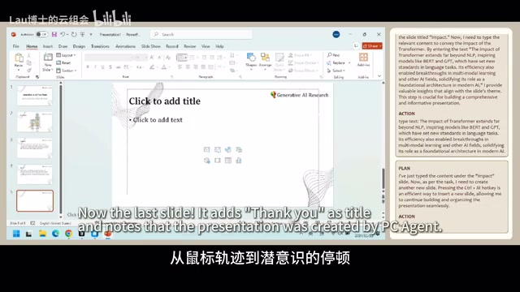
00:00:30–00:00:31 · 画面 01100:00:31–00:00:35 · 画面 012
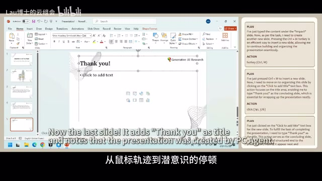
00:00:31–00:00:35 · 画面 01200:00:35–00:00:38 · 画面 013
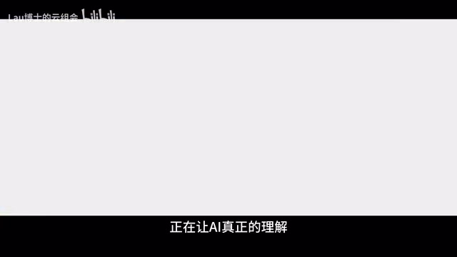
00:00:35–00:00:38 · 画面 01300:00:38–00:00:39 · 画面 014
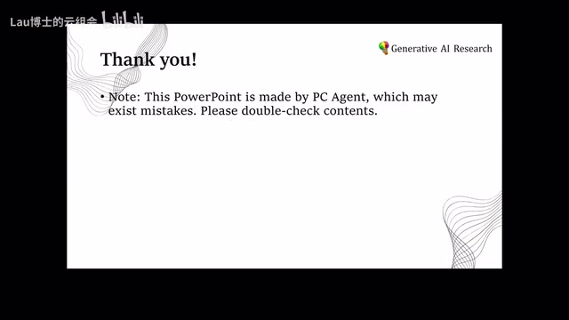
00:00:38–00:00:39 · 画面 01400:00:39–00:00:43 · 画面 015
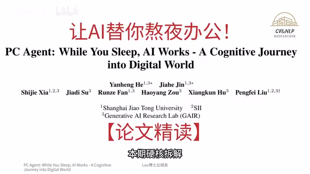
00:00:39–00:00:43 · 画面 01500:00:43–00:00:47 · 画面 016
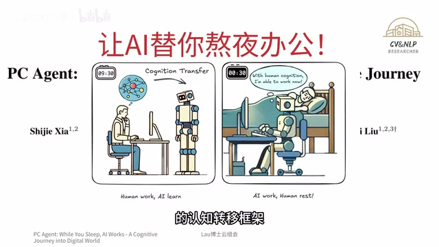
00:00:43–00:00:47 · 画面 01600:00:47–00:00:51 · 画面 017
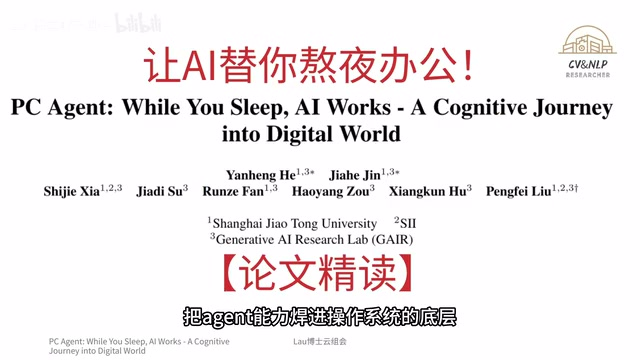
00:00:47–00:00:51 · 画面 017欢迎来到六博士的云组会，本期是我们论文精读系列的第九期，非常感谢大家的支持。我们每周都将至少有一篇高质量的论文精读发布出来，让各位同学每周都有新的论文可以学习。欢迎关注我们成为云组会的一员。在开云组会之前，先回答同学提的问题，有同学问我在直播的时候用的阅读工具是什么，今天我就给大家来介绍这款我直播在使用的工具 UPDF。
00:00:51–00:01:02 · 画面 018
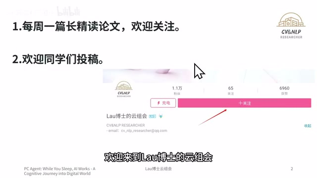
00:00:51–00:01:02 · 画面 01800:01:02–00:01:03 · 画面 019
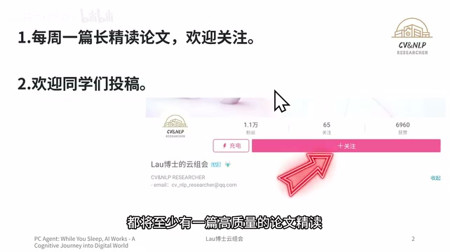
00:01:02–00:01:03 · 画面 01900:01:03–00:01:08 · 画面 020
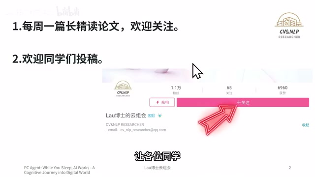
00:01:03–00:01:08 · 画面 02000:01:08–00:01:12 · 画面 021
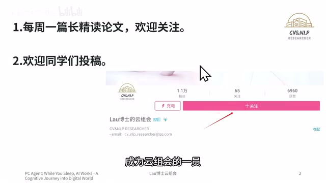
00:01:08–00:01:12 · 画面 02100:01:12–00:01:14 · 画面 022
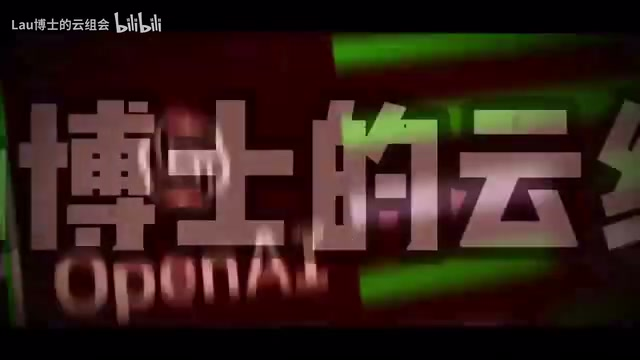
00:01:12–00:01:14 · 画面 02200:01:14–00:01:18 · 画面 023
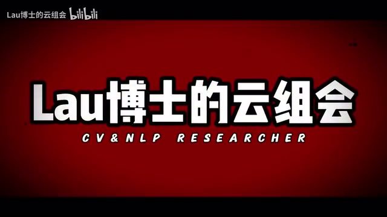
00:01:14–00:01:18 · 画面 02300:01:18–00:01:22 · 画面 024
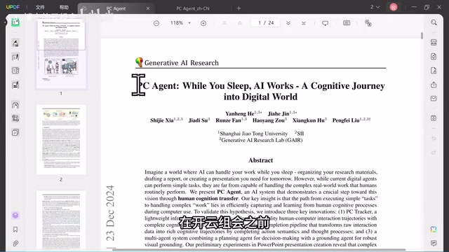
00:01:18–00:01:22 · 画面 02400:01:22–00:01:24 · 画面 025
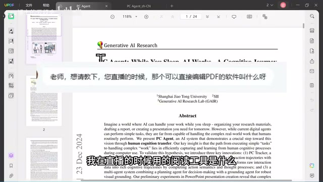
00:01:22–00:01:24 · 画面 02500:01:24–00:01:26 · 画面 026
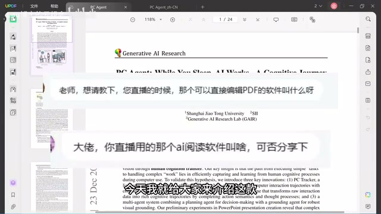
00:01:24–00:01:26 · 画面 02600:01:26–00:01:27 · 画面 027
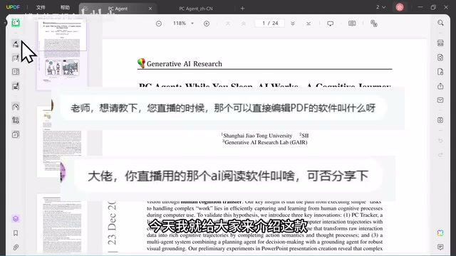
00:01:26–00:01:27 · 画面 02700:01:27–00:01:30 · 画面 028
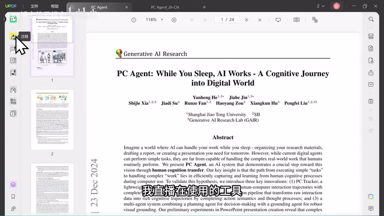
00:01:27–00:01:30 · 画面 028那 UPDF 是一款结合了 AI 技术的 PDF 阅读器和编辑器专为学术研究和高效学习而设计当我们阅读英文论文时 UPDF 的注释功能可以让我们非常容易的去标记重要的段落我们可以使用高量又或者是标注等等的多种的工具去帮助我们更好的理解和记忆论文的内容
00:01:30–00:01:38 · 画面 029
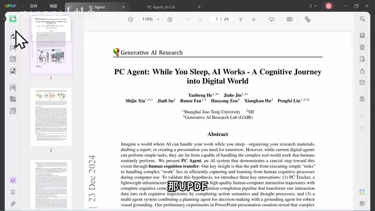
00:01:30–00:01:38 · 画面 02900:01:38–00:01:39 · 画面 030
00:01:38–00:01:39 · 画面 03000:01:39–00:01:43 · 画面 031
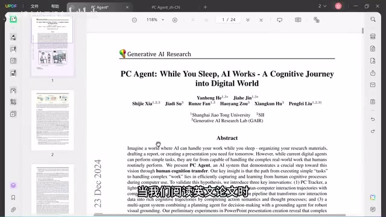
00:01:39–00:01:43 · 画面 03100:01:43–00:01:45 · 画面 032
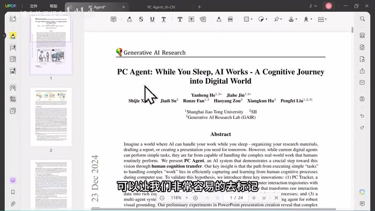
00:01:43–00:01:45 · 画面 03200:01:45–00:01:47 · 画面 033
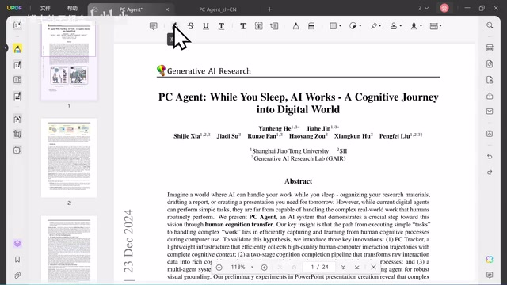
00:01:45–00:01:47 · 画面 03300:01:47–00:01:51 · 画面 034
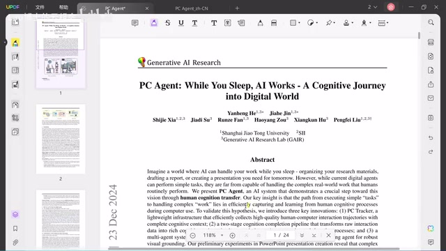
00:01:47–00:01:51 · 画面 03400:01:51–00:01:53 · 画面 035
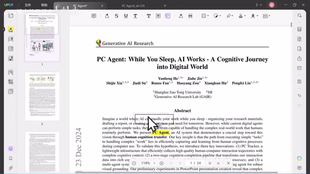
00:01:51–00:01:53 · 画面 03500:01:53–00:01:56 · 画面 036
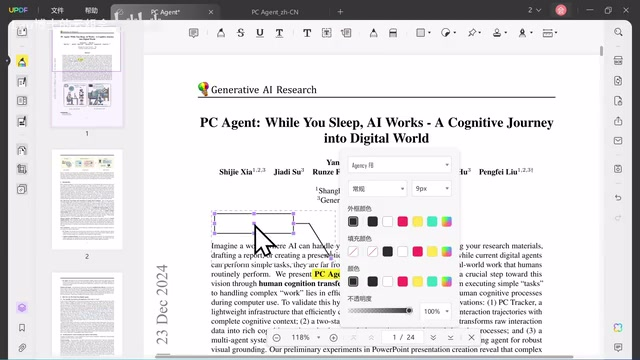
00:01:53–00:01:56 · 画面 03600:01:56–00:01:58 · 画面 037
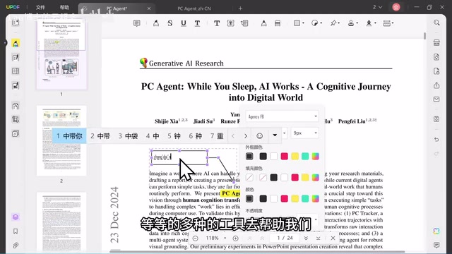
00:01:56–00:01:58 · 画面 03700:01:58–00:02:02 · 画面 038
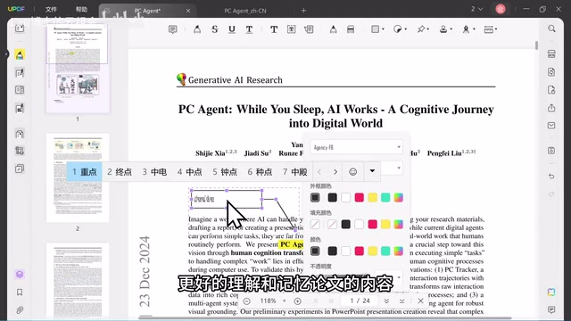
00:01:58–00:02:02 · 画面 038当然也支持直接对 PDF 里面的文字图片进行编辑和操作，比如说像这样子，我们可以随意的去对里面的文字可以去做剪切，又或者是去加一些文字到里面。其中我最喜欢的就是图片编辑的功能，能够非常方便的去把图片截取下来，比如说像这样。
00:02:02–00:02:06 · 画面 039
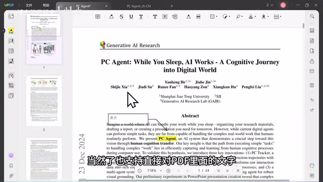
00:02:02–00:02:06 · 画面 03900:02:06–00:02:07 · 画面 040
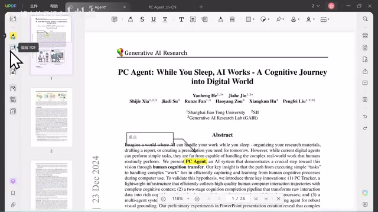
00:02:06–00:02:07 · 画面 04000:02:07–00:02:08 · 画面 041
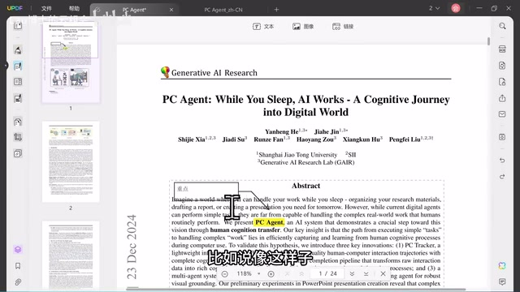
00:02:07–00:02:08 · 画面 04100:02:08–00:02:10 · 画面 042
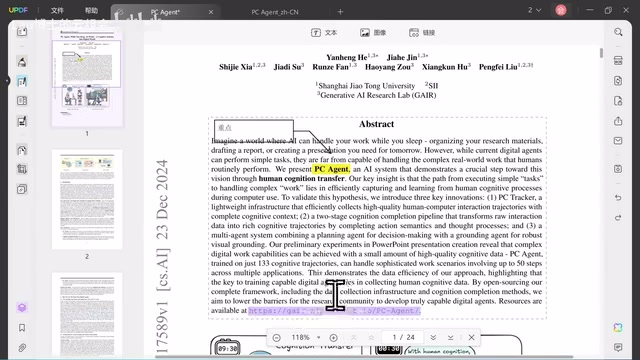
00:02:08–00:02:10 · 画面 04200:02:10–00:02:11 · 画面 043
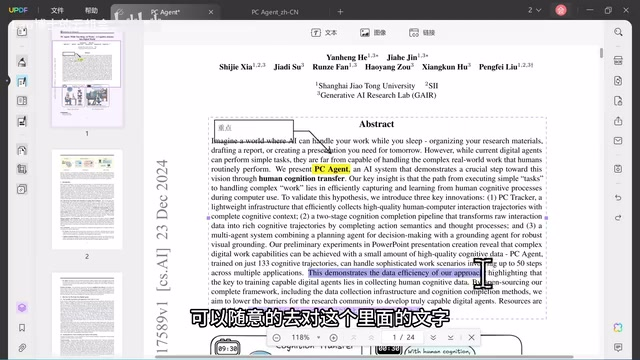
00:02:10–00:02:11 · 画面 04300:02:11–00:02:12 · 画面 044
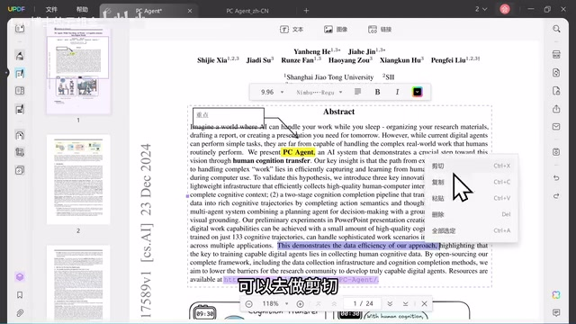
00:02:11–00:02:12 · 画面 04400:02:12–00:02:19 · 画面 045
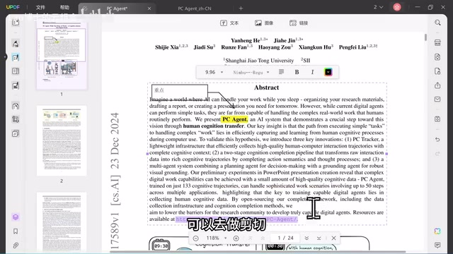
00:02:12–00:02:19 · 画面 04500:02:19–00:02:21 · 画面 046
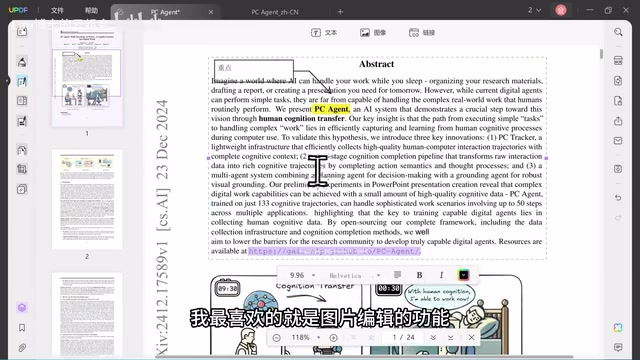
00:02:19–00:02:21 · 画面 04600:02:21–00:02:23 · 画面 047
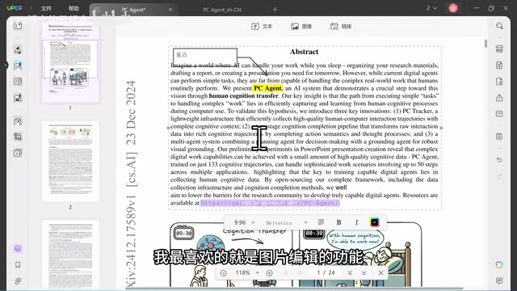
00:02:21–00:02:23 · 画面 04700:02:23–00:02:24 · 画面 048
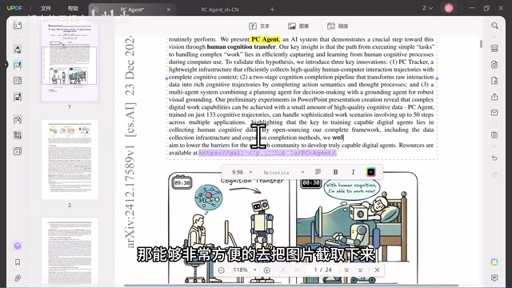
00:02:23–00:02:24 · 画面 04800:02:24–00:02:25 · 画面 049
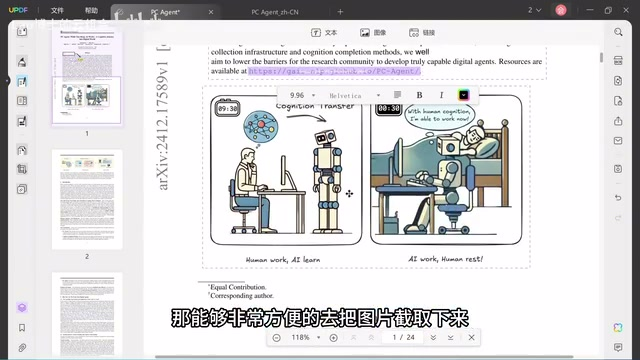
00:02:24–00:02:25 · 画面 04900:02:25–00:02:27 · 画面 050
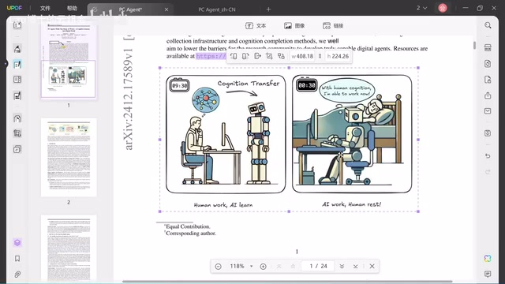
00:02:25–00:02:27 · 画面 05000:02:27–00:02:28 · 画面 051
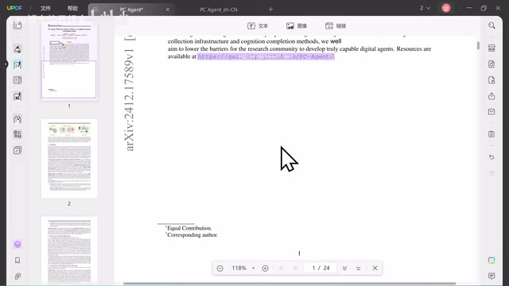
00:02:27–00:02:28 · 画面 05100:02:28–00:02:29 · 画面 052
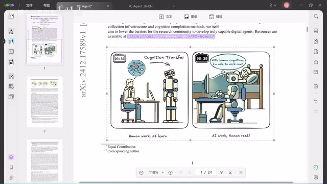
00:02:28–00:02:29 · 画面 052遇到不懂的单词或句子，UPDF 的 AI 划词功能可以及时的为我们提供准确的翻译，帮助我们迅速的理解文章的内容。除此之外，UPDF 的 AI 功能还能自动的总结全文的关键内容，让我们在短时间内把握论文的核心要点。另外一个是 UPDF 可以根据页码来生成思维导图，可以让我们按需的把握全文的内容。
00:02:29–00:02:33 · 画面 053
00:02:29–00:02:33 · 画面 05300:02:33–00:02:34 · 画面 054
00:02:33–00:02:34 · 画面 05400:02:34–00:02:38 · 画面 055
00:02:34–00:02:38 · 画面 05500:02:38–00:02:41 · 画面 056
00:02:38–00:02:41 · 画面 05600:02:41–00:02:42 · 画面 057
00:02:41–00:02:42 · 画面 05700:02:42–00:02:46 · 画面 058
00:02:42–00:02:46 · 画面 05800:02:46–00:02:47 · 画面 059
00:02:46–00:02:47 · 画面 05900:02:47–00:02:48 · 画面 060
00:02:47–00:02:48 · 画面 06000:02:48–00:02:49 · 画面 061
00:02:48–00:02:49 · 画面 06100:02:49–00:02:51 · 画面 062
00:02:49–00:02:51 · 画面 06200:02:51–00:02:53 · 画面 063
00:02:51–00:02:53 · 画面 06300:02:53–00:02:54 · 画面 064
00:02:53–00:02:54 · 画面 06400:02:54–00:02:57 · 画面 065
00:02:54–00:02:57 · 画面 06500:02:57–00:02:59 · 画面 066
00:02:57–00:02:59 · 画面 06600:02:59–00:03:02 · 画面 067
00:02:59–00:03:02 · 画面 067那如果对论文当中的某个部分有疑问，那 UPDF 的 AI 问答功能是接入了 DeepSeek，可以为我们提供详细的解答，并可以跳转到相关的段落，让我们的学习更加的高效。除了 PC 端呢，UPDF 还支持 Mac、iOS 还有 Android，同时可以在云上去联动，推荐大家来免费的下载体验。更多有关这款软件的相关信息，大家可以留意评论区置顶。
00:03:02–00:03:03 · 画面 068
00:03:02–00:03:03 · 画面 06800:03:03–00:03:06 · 画面 069
00:03:03–00:03:06 · 画面 06900:03:06–00:03:08 · 画面 070
00:03:06–00:03:08 · 画面 07000:03:08–00:03:11 · 画面 071
00:03:08–00:03:11 · 画面 07100:03:11–00:03:13 · 画面 072
00:03:11–00:03:13 · 画面 07200:03:13–00:03:15 · 画面 073
00:03:13–00:03:15 · 画面 07300:03:15–00:03:16 · 画面 074
00:03:15–00:03:16 · 画面 07400:03:16–00:03:18 · 画面 075
00:03:16–00:03:18 · 画面 07500:03:18–00:03:20 · 画面 076
00:03:18–00:03:20 · 画面 07600:03:20–00:03:24 · 画面 077
00:03:20–00:03:24 · 画面 07700:03:24–00:03:26 · 画面 078
00:03:24–00:03:26 · 画面 07800:03:26–00:03:28 · 画面 079
00:03:26–00:03:28 · 画面 07900:03:28–00:03:32 · 画面 080
00:03:28–00:03:32 · 画面 08000:03:32–00:03:34 · 画面 081
00:03:32–00:03:34 · 画面 081今天的这篇 PCA 准的相关研究是由上海交通大学 SII 还有深层式 AI 研究实验室的团队完成的。那旨在探索 AI 如何在我们休息时完成复杂的工作任务，大陆人的标题非常有意思，While Sleep AI Work，非常符合了我们中国人内卷的特质，一刻也不能停下来，告别 996。
00:03:34–00:04:04 · 画面 082
00:03:34–00:04:04 · 画面 082直接迎来 007那接下来呢让我们一起来深入了解。这项研究的各项细节。
00:04:04–00:04:05 · 画面 083
00:04:04–00:04:05 · 画面 083今天的内容呢
00:04:05–00:04:23 · 画面 084
00:04:05–00:04:23 · 画面 084非常丰富我们将从研究的摘要开始。逐步的去深入到技术挑战。认知转移框架PC Tracker认知完成的流程以及呢最终实现的 PCA 准系统。最后呢我们会呈现原文中的实验结果。并给出结论和展望。
00:04:23–00:04:24 · 画面 085
00:04:23–00:04:24 · 画面 085在摘要的部分呢
00:04:24–00:05:18 · 画面 086
00:04:24–00:05:18 · 画面 086作者呢大胆的提出了一个愿景。那 AI 呢他们认为呢能够在我们睡觉的时候。去完成复杂的这个工作。比如说呢去整理一些研究的材料。撰写这个报告又或者是创建演示文稿。那然而呢现在的这种数字代理呢。他只能够去执行一些简单的任务。比如说呢像这个网页搜索啊。那他们呢就没有办法去做到这种。跨多个应用程序的这种协调。复杂的决策或者是跟审美有关的这种复杂工作。
那为了实现这个愿景呢。作者们呢他们就提出了这个 PC Agent 的这个系统。那它主要呢是有三个关键的这个创新来实现。那第一个呢是 PC Tracker第二个呢是认知完成的一个流程。再有一个呢是多智能体的系统。那这个呢是原文的这个图一。
00:05:18–00:05:28 · 画面 087
00:05:18–00:05:28 · 画面 087那这个图一呢它就展示了整个框架。也就是我刚刚提到的这三个点。那这表明了这个 PC agent 呢，它是怎么样去通过收集和处理人类的这个认知的轨迹，
00:05:28–00:05:43 · 画面 088
00:05:28–00:05:43 · 画面 088来完成这个复杂的任务呢？那在这篇文章里面呢，他们是仅通过了 133 条这个认知轨迹的这个训练，来可以让这个 PC agent 呢可以去处理多达 50 步的这种复杂的这个任务，
00:05:43–00:05:44 · 画面 089
00:05:43–00:05:44 · 画面 08900:05:44–00:06:06 · 画面 090
00:05:44–00:06:06 · 画面 090那这个呢就显示出了他们的一种数据效率上面的一种强大。那同时呢这篇文章也是进行了开源。那因此呢在作者的这个期望里面呢，是希望能够降低这个研究社区开发，真正有能力的这种数字代理的这种门槛。
00:06:06–00:06:07 · 画面 091
00:06:06–00:06:07 · 画面 091那在这篇文章的引言部分呢，
00:06:07–00:07:00 · 画面 092
00:06:07–00:07:00 · 画面 092作者就指出了尽管这个 AI 呢在本本跟这个图像生成方面啊，取得了这个巨大的，进展但是呢这些能力呢大多数都是在表面上显示的，他是没有办法去参与到实际的这种复杂工作当中。那就比如说啊那现在的这种数字代理，他只能够去执行一些简单的网页搜索，或者是文件的这种，复制的这种任务就没有办法的像这种视频编辑或者是报告撰写去完成这样子的工作。作者认为人类的认知转移是实现复杂工作的自动化的关键。通过捕捉跟学习人类的认知的过程才是这个的关键。AI 就可以更好地去完成这些任务。通过学习人类的认知的过程。
00:07:00–00:07:47 · 画面 093
00:07:00–00:07:47 · 画面 093在文章的第二章里面，作者详细的去讨论实现复杂工作自动化的遇到的两大的一个技术挑战。首先是视觉的定位，因为 AI 它需要能够精确的去识别图形用户界面，也就叫做 GUI 里面的各项元素，这是完成计算机任务的一个基础。然后现在的这种视觉语言模型在这方面它是不足的。另外一个是 AI 它是缺乏这种，认知理解的这种能力的。它没有办法像人类一样的去进行一种很细腻度的这种决策跟动态调整。那这些挑战呢就说明了人类的这种认知转移是实现这种复杂工作的这种自动化的一个必要的途径。
00:07:47–00:08:26 · 画面 094
00:07:47–00:08:26 · 画面 094在论文的第三章里面，作者就提出了认知转移框架。这个是实现复杂工作自动化的一个关键。人类在完成这种复杂工作的时候，在大脑里面都会进行一系列的这种复杂的认知活动，包括了对这种当前目标的一个理解，当前的状态和反思过去的行为，以及规划未来的一个策略，那这些过程呢认知的过程会最终转化为具体的决策和行为，那通过这种方式呢，AI 可以间接的去学习到人类的这个认知的过程，从而更好的去完成复杂的任务。
00:08:26–00:08:27 · 画面 095
00:08:26–00:08:27 · 画面 095那在文章的第四章当中呢，
00:08:27–00:09:44 · 画面 096
00:08:27–00:09:44 · 画面 096作者呢就详细的去介绍了 PC Tracker。那这个呢是一个高效收集人机交互数据的基础设施。那这个 PC Tracker 呢它有几个关键的特性。那分别呢是这个轻量级。高可用性还有可拓展性统一动作数据透明性等等的这个关键因素。那它呢是可以在后台里面的无缝的运行。记录这个用户的键盘。鼠标啊等等操作啊。那以及呢这个屏幕的这个截图。
那在 PC Tracker 这一章呢它涵盖了非常多的这种图示上面的解读。其中呢这篇文章的图二到图八呢。都是属于这个章节的这个解读的。我们先来看看一下 Figure 2 跟 Figure 3那在 Figure 2 里面呢这里都提到了这个 P-Tracker 的一个关键的要素也就是我们刚刚文本上面的这几个特性。那这个 figure3 呢它就是记录了这个 PC tracker 它是怎么样去收集的这个一个画面就它呢是 PC tracker 它收集的这个交互轨迹呢它不仅是记录这个用户的一些具体的操作步骤那还能去反映一些动态的探索及优化的这个过程我们可以看到这个 figure3 呢它是在描述一个怎么样去在一个 Brain 的这个 slide 里面呢去就是在桌面上面去打开这个 PPT。
00:09:44–00:10:10 · 画面 097
00:09:44–00:10:10 · 画面 097然后呢去 click 这个空白的这个地方然后去把这个 hello world 打出来打出来以后呢还去做了一个保存我们大致上是可以看得到的那后续呢就等了以后他就把它给关掉了那下面呢也去记录了各种各样的这个不同的一些事件以及呢一些坐标上面的一些数据。
00:10:10–00:10:11 · 画面 098
00:10:10–00:10:11 · 画面 098那 Figure 5 呢
00:10:11–00:11:12 · 画面 099
00:10:11–00:11:12 · 画面 099它就展示了 Pitch Shocker是怎么将多个的原始的操作。封装成一个统一的类型文本的动作。那这样子做呢就可以大大的减少记录事件的这种数量。同时呢增强了这种动作的语义信息。那如果我们从这种面向对象的语言的这种角度去理解呢。就是说它把很多的这些动作抽象成某几类的这个动作。然后在里面的定义了一些方法。然后呢就抽象把一些数据高度抽象的。
能够起到呢去训练这些动作的一些目的。那 Figure 5 呢它是展示了一个他们去做一个键入的一个 Example。就是一个案例我们可以看这个 Hello它是怎么打出来的。那它在这里呢左手边是一个 Raw Action那右手边的是一个 Type Buffer。那它就是通过一些。这个切换大小写啊。然后键入这个字母啊。如果说又切换到这个大小写。
然后再放这个字母。Backspace 就是退格啊就把那个打错的这个东西删掉。然后继续输入
00:11:12–00:11:17 · 画面 100
00:11:12–00:11:17 · 画面 100那最后呢它就这个输出这样子一个 Type Text就是 Hello
00:11:17–00:11:18 · 画面 101
00:11:17–00:11:18 · 画面 101那 Figure 6 呢它就展示了这个 PC Shock 是怎么通过系统的这种 API 获取点击的这个元素的信息，为后续的这个行为语义呢完成了提供重要的这种支持。那它这里就实际上是提供了就是说它是怎么样去点击这个 Google Chrome 的这个图标，那点这个图标的时候呢它会记录下这个 Google 的这个元素的名字，然后呢它的这个 Bounding Box 就是说
00:11:18–00:11:21 · 画面 102
00:11:18–00:11:21 · 画面 10200:11:21–00:12:02 · 画面 103
00:11:21–00:12:02 · 画面 103它的这些位置的一些内容，那它也会记录下来。那右手边的这个 fig7 呢它是展示了这个人类的跟自然的一个交互的这个过程，那它这个过程呢也是分析出来呢也是有助于去给这个 pc tracker 呢进行一个学习的
00:12:02–00:12:03 · 画面 104
00:12:02–00:12:03 · 画面 104那这个 figure a 呢就展示了这个 pc truck 非常重要的双模式的收集设计，那这个双模式的收集呢包括任务导向和非任务导向两种模式。那在这个任务导向模式底下呢用户呢就需要去完成一些特定的任务，pc truck 呢会记录这个用户完成任务的这个过程的所有操作。那这种模式就适合啊收集有明确目标的这种步骤跟数据那
00:12:03–00:13:44 · 画面 105
00:12:03–00:13:44 · 画面 105根据我的理解，比如说在这个 PPT 里面去创建一个演示文稿，又或者是在 Chrome 里面去做一些搜索那这些应该就是所谓的特定的一些很明确的一个任务。在这个任务导向里面实际上还分了两个模式一个是给定任务模式，一个是自由任务模式。那给定任务模式就是要在预设里面去随机的去抽取在系统里面然后去让这个任务去完成。那自由的这个模式呢就是用户呢可以去操作这个计算机不受这种预设的一个限制，但是呢去在完成这个动作以后是要提供这个任务上面的一个描述。非导向呢就是顾名思义了就是在它是不受这个设定目标的一个约束的，那用户呢就可以自由的去使用这个计算机。那 PC Shock 呢会记录这个用户的所有的这些操作。那像这个模式的话呢根据我的理解啊那我就认为它呢可能就是更适用于去研究一些用户的这种行为习惯呢或者说是探索一些新的这种交互方式啊等等。那它呢可能呢它这种非约束的这种
动作就能够让这个 AI 系统有更好的这种放话能力
00:13:44–00:13:45 · 画面 106
00:13:44–00:13:45 · 画面 106在文章的第五章当中作者就介绍了如何将原始的人机交互的数据转化成有意义的认知轨迹，这个过程它就包括两个阶段，一个是数据经验，一个是认知的完成。数据经验的阶段通过过滤还有标准化操作来确保数据的质量。在认知完成的阶段作者就利用大圆模型
00:13:45–00:13:47 · 画面 107
00:13:45–00:13:47 · 画面 10700:13:47–00:14:53 · 画面 108
00:13:47–00:14:53 · 画面 108来完成这个人类背后的一个认知的过程，包括这个语义的补充以及思考过程重建。那这个 fig9 呢就很好的去举了一个例子来演示这个过程，我们可以看到这里有三个过程，第一个过程它是原始的一个输入，就给定了一个鼠标它点到了这个网页的哪一个地方到了第二步它就开始第一次的这种转化了，这个转化以后它就知道说它已经把这个鼠标放到搜索框里面，经过思考就是再进一步的转化它就知道了这个人类的这个意图就是说他是要找到一个埃菲尔铁塔的一个评分高评分的一个餐馆那这个第六章呢作者就介绍了 PCA 准那这是一个能够完成复杂计算机工作的一个 AI 系统，这个 PCA 准呢他就采用了这种多智能体的系统架构，那结合了规划智能体跟这个视觉智能体呢
00:14:53–00:14:57 · 画面 109
00:14:53–00:14:57 · 画面 10900:14:57–00:15:00 · 画面 110
00:14:57–00:15:00 · 画面 11000:15:00–00:16:26 · 画面 111
00:15:00–00:16:26 · 画面 111那规划智能体就负责去决策那通过学习人类的这种认知轨迹来做合理的这种行动规划那视觉的这个定位的智能体就负责执行这个点击动作通过自检的这种机制来确保这个目标的准确性我们来看一下这个图实它是怎么去演示这么一个过程的那这里呢就是有两个智能体一个叫做 Planning Agent另外一个叫 Grounding Agent那这个 Planning Agent 呢就是说它想去去 Clip这个关掉这个 PPT 一个软件那它呢就是想去点这个 Image这个一个 Button那这个 Button 呢
Image 的这个 Button 是没有的它就这个 Grounding Agent 就告诉它它这是没有的那好那后来它就重新去思考说我要去按那个 Close 的这个 Button那这个时候 Grounding Agent 呢就给出了这个准确的一个坐标那这个图实例呢它就有两个片的片段一个是 Create 一个是 Respond那这里呢它就展示了这个训练数据的一个结构那包括这个系统的一个提示啊任务的描述啊还有这个历史的步骤啊那两个框
00:16:26–00:16:27 · 画面 112
00:16:26–00:16:27 · 画面 112那 Figure 12 呢就是展示了一个智能体的一个自验证的一个机制的这个过程，那这个是 PC Agent 很重要的一个特性，那它呢就保证了它的这种准确性来避免这种点击的失败。那第一步呢我们看到这里会有一个 VSU 光顶的一个 input，然后呢给到它来
00:16:27–00:17:30 · 画面 113
00:16:27–00:17:30 · 画面 113得到一个 click 的这个坐标就给到 Grounding 的这个 agent，然后呢最重要的一步呢就是这个第三步去做这个验证。那他在获得这个座标以后呢他会去调用这些 API 来获取一些详细的一些信息，那比如说呢它这个放进去以后，比如说要点一个保存的一个按钮，那它这个 API 的这个位置的信息它给到进去以后呢，它应该返回的一个结果就是看到它是一个保存的一个按钮。那假如说它不是一个保存的一个按钮的话呢，那就是 reject，那就要再来一遍再去生成一个新的这个坐标。那如果一致的话那就是 accept，那就是这个坐标它就是正确的。
00:17:30–00:18:29 · 画面 114
00:17:30–00:18:29 · 画面 114在文章的第七章当中，作者就通过实验去验证了 PCA 准的效果。实验选择了 PPT 的演示文稿的创建作为主要的测试任务，这里面主要是收集了 133 条的交互轨迹，包括了一些复杂的操作流程。FIG13 就是在不同的这种数据级的平均操作数来做了一个比较，很明显 PCA 准的数据级的平均操作数就会明显的去高于其他的一些 switch，这个就表明了它的处理复杂任务的能力。我们可以看到图 15，这是两种不同的 task description，左手边的这个是比较简单，右手边这个是比较具体的。这里面它没有直接去演示，但是说明了就是用右边的这个，它实际上这种描述它是会更加的准确的生成出来的结果。
让我们来看一下这个 Fig14，这个 Fig14 呢就是 PC Agent 创建的一个势力的演示文稿，也就是 PPT 了。可以看到呢，它在这种排版啊还有这个组织里面呢都非常出色啊，跟人呢这种动作呢是非常的相像的。
00:18:29–00:18:46 · 画面 115
00:18:29–00:18:46 · 画面 11500:18:46–00:18:47 · 画面 116
00:18:46–00:18:47 · 画面 116在实验里面，作者详细的去展示了 PC Agent 在复杂的这种 PPT 的任务中表现。PC Agent 成功的去创建了一个包含多个页面的 PPT 的演示文稿，这个是需要在 PPT 跟 Chrome 之间频繁的去做切换，然后收集在线资源。这个评估就是表明 PC Agent 它是能够满足实际的这种需要的生成具有
00:18:47–00:19:18 · 画面 117
00:18:47–00:19:18 · 画面 117使用价值的这个 PPT，也就是我们刚刚演示的这个图像的这个内容。
00:19:18–00:19:19 · 画面 118
00:19:18–00:19:19 · 画面 118在批量处理的任务当中，PCA 准表现也非常不错。作者要求 PCA 准创建 20 个图灵养得组的介绍海报，这是一个需要重复操作的任务。PCA 准成功的去创建了 11 个符合要求的海报，成功率达到了 55%虽然它有一些案例失败，存在着一些瑕疵或者是偏差，但是这个成绩也表明它是在重复任务当中有很大的一个潜力的。
00:19:19–00:19:45 · 画面 119
00:19:19–00:19:45 · 画面 11900:19:45–00:19:46 · 画面 120
00:19:45–00:19:46 · 画面 120在实验里面，作者也分析了 PCA 准失败的案例。
00:19:46–00:20:10 · 画面 121
00:19:46–00:20:10 · 画面 121结果表明错误主要是源自于规划阶段的错误。一旦这个错误被执行。PCA 准往往就很难恢复。就导致了任务的失败。这表明在未来的研究里面。要进一步的去优化 PCA 准的这种错误的恢复能力。来提高它在实际应用当中的鲁莽性。
00:20:10–00:20:52 · 画面 122
00:20:10–00:20:52 · 画面 122在任务描述的质量上。详细的这种任务描述。会让 PCA 准有一个更好的结果。相反简单或是模糊的描述。就导致这个结果并不尽如人意。比如说在详细的任务描述的背景之下。PCA 准就能够更准确的去执行复杂的操作。比如说在 PPT 里面创建多页的演示文稿。然后插入相关的图片。当这个任务描述比较简单的时候。PCA 准它就会漏掉去做一些步骤。
导致的这个结果不符合预期。所以说优化任务描述的质量。是提高 PCA 准的关键
00:20:52–00:20:53 · 画面 123
00:20:52–00:20:53 · 画面 123在放话能力的范畴里面。
00:20:53–00:21:20 · 画面 124
00:20:53–00:21:20 · 画面 124实际上 PCA 准并不是那么的好。PCA 准它在 PPT 上面的效果是很好的但是在多种的这种应用程序的协调操作复杂决策以及审美判断上面它就没有那么好了因此未来的工作应该是集中在提高 PCA 准的这种放话能力能够让它在不同的环境里面去处理不同类型的复杂的任务
00:21:20–00:21:53 · 画面 125
00:21:20–00:21:53 · 画面 125在数据效率的范畴里面 PCA 准的表现尤为突出尽管只是使用了 133 条的认知轨迹进行训练 PCA 准仍然能够处理高达 50 步的复杂任务这就说明了高质量的人类认知轨迹是非常关键的通过学习这些轨迹 PCA 准能够快速的去掌握复杂任务的处理方法即使是小注意级的情况下表现也非常出色这种数据效率不仅仅是降低了训练成本那还提高了系统的实用性和可扩展性那最后呢作者就总结了 PCA 准的研究成果提出了未来的研究方向 PCA 准呢通过认知转移的框架成功的去实现了复杂的任务自动化未来呢研究将会集中在扩大规模提高乳棒性优化动作的执行利用无任务数据进行预训练
00:21:53–00:22:32 · 画面 126
00:21:53–00:22:32 · 画面 126以及重建复杂的工作评估框架此外作者还强调了提高用户友好性的重要性比如说去简化任务描述来提高系统的应用性今天的云组会到这里我们就结束了如果对你有所启发感谢三连加关注如果你有什么想法欢迎留言我们下一期节目不见不散
00:22:32–00:22:32 · 画面 127
00:22:32–00:22:32 · 画面 12700:22:32–00:22:33 · 画面 128
00:22:32–00:22:33 · 画面 128转写与来源说明 · 18 个自动复核提示
保留 251 个原始语音片段，18 个片段触发自动复核提示。提示仅用于定位可能的术语、重复或识别问题，不等于已确认错误。
讲解画面为源视频截图（640×360），不是可编辑 PPT 文件。全片按每秒 2 帧扫描内容变化，逐步展开页保留；连续动画保留代表画面。清晰度受源视频限制。
原视频：paper/合集_2026-10-16_论文精读/交大出品“数字打工人”终结996！PC Agent【论文精读】.mp4
SHA-256：52eb719a41dda15492e8a028d90dd014021382498cfa44a8e229b99ec2b1de72
直接迎来 007
那接下来呢
让我们一起来深入了解。
这项研究的各项细节。
今天的内容呢
非常丰富
我们将从研究的摘要开始。
逐步的去深入到技术挑战。
认知转移框架
PC Tracker
认知完成的流程
以及呢
最终实现的 PCA 准系统。
最后呢
我们会呈现原文中的实验结果。
并给出结论和展望。
在摘要的部分呢
作者呢
全文按视频语音与画面制作。原论文可从上方链接下载；完整资料包保留全文、原始逐字稿、字幕和校对记录。